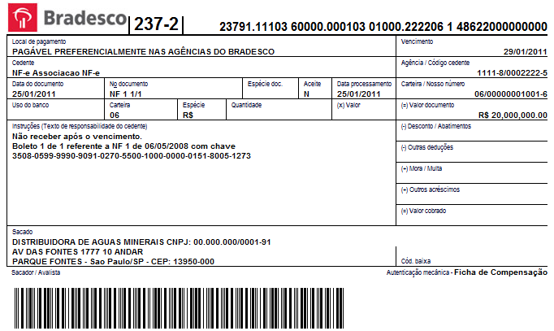

ProgramaÃÂÃÂÃÂçÃÂÃÂÃÂão Funcional e LÃÂÃÂÃÂógica - Prof. Ricardo da Rocha
</p>
<h1>Tarefa 2 de ProgramaÃÂÃÂÃÂçÃÂÃÂÃÂão Funcional e LÃÂÃÂÃÂógica</h1>
<h1>VisÃÂÃÂÃÂão geral</h1>
<p>Nesta tarefa vocÃÂÃÂÃÂê deverÃÂÃÂÃÂá implementar funÃÂÃÂÃÂçÃÂÃÂÃÂões de manipulaÃÂÃÂÃÂçÃÂÃÂÃÂão de nÃÂÃÂÃÂúmero de boleto bancÃÂÃÂÃÂário brasileiro, de maneira a praticar a construÃÂÃÂÃÂçÃÂÃÂÃÂão de funÃÂÃÂÃÂçÃÂÃÂÃÂões simples em Haskell.</p>
<h1>DescriÃÂÃÂÃÂçÃÂÃÂÃÂão</h1>
<p></p>
<p>O <a href="https://pt.wikipedia.org/wiki/Boleto_banc%C3%A1rio">boleto bancÃÂÃÂÃÂário brasileiro</a> pode ser identificado por um de dois nÃÂÃÂÃÂúmeros:</p>
<ul>
<li>Linha digitÃÂÃÂÃÂável: ÃÂÃÂÃÂé um identificador com 47 nÃÂÃÂÃÂúmeros que aparece no topo do boleto bancÃÂÃÂÃÂário que ÃÂÃÂÃÂé projetado para facilitar a digitaÃÂÃÂÃÂçÃÂÃÂÃÂão por humanos.</li>
<li>CÃÂÃÂÃÂódigo de barras: ÃÂÃÂÃÂé um identificador com 44 nÃÂÃÂÃÂúmeros representado no boleto pelo cÃÂÃÂÃÂódigo de barras bidimensional que ÃÂÃÂÃÂé projetado para a leitura automÃÂÃÂÃÂática por dispositivos eletrÃÂÃÂÃÂ
Ã
Ânicos.</li>
</ul>
<p>Ambas as identificaÃÂÃÂÃÂçÃÂÃÂÃÂões traduzem um mesmo boleto bancÃÂÃÂÃÂário e possuem o mesmo conjunto de informaÃÂÃÂÃÂçÃÂÃÂÃÂões que, entretanto, ÃÂÃÂÃÂé traduzida em nÃÂÃÂÃÂúmeros de maneiras diferentes. Esta tarefa envolve unicamente a interpretaÃÂÃÂÃÂçÃÂÃÂÃÂão da <strong>linha digitÃÂÃÂÃÂável</strong> e por isso vocÃÂÃÂÃÂê deve ter <strong>cuidado para nÃÂÃÂÃÂão implementar</strong> a manipulaÃÂÃÂÃÂçÃÂÃÂÃÂão do cÃÂÃÂÃÂódigo de barras (tenha cuidado ao procurar informaÃÂÃÂÃÂçÃÂÃÂÃÂões de outras fontes alÃÂÃÂÃÂém desta descriÃÂÃÂÃÂçÃÂÃÂÃÂão).</p>
<p>Por exemplo, as seguintes "linha digitÃÂÃÂÃÂável" e "cÃÂÃÂÃÂódigo de barras" representam o mesmo boleto:</p>
<pre><code> 00190.50095 40144.816069 06809.350314 3 37370000000100 - linha digitÃÂÃÂÃÂável
00193373700000001000500940144816060680935031 - cÃÂÃÂÃÂódigo de barras
</code></pre>
<h2>Estrutura da Linha DigitÃÂÃÂÃÂável</h2>
<p>Considere a seguinte estrutura dos 47 nÃÂÃÂÃÂúmero da "linha digitÃÂÃÂÃÂável":</p>
<pre><code> +-------------+--------------+--------------+---------+----------------+
| Campo 1 | Campo 2 | Campo 3 | Campo 4 | Campo 5 |
+-------------+--------------+--------------+---------+----------------+
| AAABC.CCCCX | DDDDD.DDDDDY | EEEEE.EEEEEZ | K | UUUUVVVVVVVVVV |
+-------------+--------------+--------------+---------+----------------+
</code></pre>
<p>Os nÃÂÃÂÃÂúmeros devem ser interpretados da seguinte maneira:</p>
<ul>
<li><code>AAA</code>: posiÃÂÃÂÃÂçÃÂÃÂÃÂões 1 a 3 identificam o banco de acordo com um identificador ÃÂÃÂÃÂúnico atribuÃÂÃÂÃÂÃÂdo a cada banco. Por exemplo, "001" ÃÂÃÂÃÂé Banco do Brasil e "237" ÃÂÃÂÃÂé Bradesco (vocÃÂÃÂÃÂê encontra os cÃÂÃÂÃÂódigos de todos os banco <a href="https://www.febraban.org.br/associados/utilitarios/bancos.asp">aqui</a>).</li>
<li><code>B</code>: posiÃÂÃÂÃÂçÃÂÃÂÃÂão 4 identifica a moeda aplicada ao boleto, que ÃÂÃÂÃÂé usualmente "9", cÃÂÃÂÃÂódigo do real.</li>
<li><code>C</code>: posiÃÂÃÂÃÂçÃÂÃÂÃÂão 5 ÃÂÃÂÃÂé o dÃÂÃÂÃÂÃÂgito verificador do cÃÂÃÂÃÂódigo de barras</li>
<li><code>CCCC</code>: posiÃÂÃÂÃÂçÃÂÃÂÃÂões 6 a 9 ÃÂÃÂÃÂé o fator de vencimento, que indica a data de vencimento do boleto na forma de nÃÂÃÂÃÂúmero de dias apÃÂÃÂÃÂós 7/10/1997. </li>
<li><code>X</code>: posiÃÂÃÂÃÂçÃÂÃÂÃÂão 10 ÃÂÃÂÃÂé o dÃÂÃÂÃÂÃÂgito verificador das informaÃÂÃÂÃÂçÃÂÃÂÃÂões do "Campo 1".</li>
<li><code>Y</code>: posiÃÂÃÂÃÂçÃÂÃÂÃÂão 21 ÃÂÃÂÃÂé o dÃÂÃÂÃÂÃÂgito verificador das informaÃÂÃÂÃÂçÃÂÃÂÃÂões do "Campo 2".</li>
<li><code>Z</code>: posiÃÂÃÂÃÂçÃÂÃÂÃÂão 31 ÃÂÃÂÃÂé o dÃÂÃÂÃÂÃÂgito verificador das informaÃÂÃÂÃÂçÃÂÃÂÃÂões do "Campo 3".
<!-- * <code>DDDDD.DDDDD</code>: posiÃÂÃÂÃÂçÃÂÃÂÃÂões 11 a 20 identificam o valor do boleto, multiplicado por 100. EntÃÂÃÂÃÂão se os nÃÂÃÂÃÂúmero sÃÂÃÂÃÂão <code>00009.13499</code> entÃÂÃÂÃÂão o valor do boleto ÃÂÃÂÃÂé R$ 9.134,99 (considerando que moeda ÃÂÃÂÃÂé real). --></li>
<li><code>VVVVVVVVVV</code>: posiÃÂÃÂÃÂçÃÂÃÂÃÂões 38 a 47 identificam o valor do boleto, multiplicado por 100. EntÃÂÃÂÃÂão se os nÃÂÃÂÃÂúmero sÃÂÃÂÃÂão <code>0000913499</code> entÃÂÃÂÃÂão o valor do boleto ÃÂÃÂÃÂé R$ 9.134,99 (considerando que moeda ÃÂÃÂÃÂé real).</li>
<li><code>DDDDD.DDDDD</code>, <code>K</code> e <code>UUUU</code>: a interpretaÃÂÃÂÃÂçÃÂÃÂÃÂão dessas posiÃÂÃÂÃÂçÃÂÃÂÃÂões ÃÂÃÂÃÂé definida pelo banco e por este motivo nÃÂÃÂÃÂão serÃÂÃÂÃÂão consideradas nesta tarefa.</li>
</ul>
<h2>Tarefas de ImplementaÃÂÃÂÃÂçÃÂÃÂÃÂão</h2>
<p>Dado um cÃÂÃÂÃÂódigo de boleto bancÃÂÃÂÃÂário na representaÃÂÃÂÃÂçÃÂÃÂÃÂão de linha digitÃÂÃÂÃÂável (nÃÂÃÂÃÂúmeros que aparecem no boleto), vocÃÂÃÂÃÂê deverÃÂÃÂÃÂá implementar funÃÂÃÂÃÂçÃÂÃÂÃÂões que retornem:</p>
<ul>
<li>Se o boleto ÃÂÃÂÃÂé vÃÂÃÂÃÂálido, ou seja, se os dÃÂÃÂÃÂÃÂgitos verificadores dos trÃÂÃÂÃÂês campos (<code>X</code>, <code>Y</code> e <code>Z</code>) estÃÂÃÂÃÂão corretos.</li>
<li>Data de vencimento de um boleto</li>
<li>Valor de um boleto</li>
<li>Banco associado ao boleto</li>
</ul>
<h3>CÃÂÃÂÃÂálculo do fator de vencimento</h3>
<p>O fator de vencimento indica a data de vencimento do boleto a forma de nÃÂÃÂÃÂúmero de dias apÃÂÃÂÃÂós 7 de outubro de 1997. Se o fator de vencimento ÃÂÃÂÃÂé <code>0001</code> entÃÂÃÂÃÂão a data de vencimento ÃÂÃÂÃÂé 8 de outubro de 1997 e assim por diante, como no exemplo mostrado na tabela.</p>
<!--
Fator Data de Vencimento
1000 03/07/2000
1001 04/07/2000
1002 05/07/2000
9999 21/02/2025
-->
<table><tbody><tr><th>Fator</th><th>Data de Vencimento</th></tr><tr><td>1000</td><td>03/07/2000</td></tr><tr><td>1001</td><td>04/07/2000</td></tr><tr><td>1002</td><td>05/07/2000</td></tr><tr><td>9999</td><td>21/02/2025</td></tr></tbody></table>
<p>HÃÂÃÂÃÂá algumas regras adicionais para avaliar o fator de vencimento a partir de 21/02/2025, mas elas nÃÂÃÂÃÂão serÃÂÃÂÃÂão consideradas nesta tarefa.</p>
<h3>CÃÂÃÂÃÂálculo dos DÃÂÃÂÃÂÃÂgitos Verificadores</h3>
<p>Para o cÃÂÃÂÃÂálculo dos digitos verificadores de cada campo, cada nÃÂÃÂÃÂúmero deve ser multiplicado por um "multiplicador" (1 ou 2), resumido em um nÃÂÃÂÃÂúmero de um dÃÂÃÂÃÂÃÂgito (ver <code>resumeDigito</code>) e somados entre si. Do valor total, ÃÂÃÂÃÂé extraÃÂÃÂÃÂÃÂdo o resultado da divisÃÂÃÂÃÂão inteira e o resto (<code>R</code>). O valor do dÃÂÃÂÃÂÃÂgito ÃÂÃÂÃÂé <code>(10-R) mod 10</code>. </p>
<p>A funÃÂÃÂÃÂçÃÂÃÂÃÂão <code>resumeDigito</code>, que transforma um nÃÂÃÂÃÂúmero de dois dÃÂÃÂÃÂÃÂgito em um dÃÂÃÂÃÂÃÂgito, soma o valor da dezena com a unidade, atÃÂÃÂÃÂé que o resultado seja um nÃÂÃÂÃÂúmero de um dÃÂÃÂÃÂÃÂgito.</p>
<p>O multiplicador ÃÂÃÂÃÂé uma sequÃÂÃÂÃÂência de alternada de "2" e "1", iniciando por "2", a associada ÃÂÃÂÃÂàs respectivas posiÃÂÃÂÃÂçÃÂÃÂÃÂões dos nÃÂÃÂÃÂúmeros do cÃÂÃÂÃÂódigo, <strong>excluindo</strong> as posiÃÂÃÂÃÂçÃÂÃÂÃÂões dos dÃÂÃÂÃÂÃÂgitos verificadores. </p>
<pre><code> 00190.50095 40144.816069 06809.350314 3 37370000000100
Campo 1 Campo 2 Campo 3
00190.50095 40144.816069 06809.350314
21212 1212 12121 21212 12121 21212 &lt;--- multiplicador
</code></pre>
<p>Para o "campo 2":</p>
<ol>
<li><p>AplicaÃÂÃÂÃÂçÃÂÃÂÃÂão do multiplicador: </p>
<pre><code>4*1 + 0*2 + 1*1 + 4*2 + 4*1 + 8*2 + 1*1 + 6*2 + 0*1 + 6*2
4 + 0 + 1 + 8 + 4 + 16 + 1 + 12 + 0 + 12
</code></pre></li>
<li><p>AplicaÃÂÃÂÃÂçÃÂÃÂÃÂão do <code>resumeDigito</code>, totalizando 31.</p>
<pre><code>4 + 0 + 1 + 8 + 4 + 16 + 1 + 12 + 0 + 12
4 + 0 + 1 + 8 + 4 + (1+6) + 1 + (1+2) + 0 + (1+2) = 31
</code></pre></li>
<li><p>ObtenÃÂÃÂÃÂçÃÂÃÂÃÂão do resto</p>
<pre><code>31 mod 10 = 1
</code></pre></li>
<li><p>CÃÂÃÂÃÂáculo do valor do dÃÂÃÂÃÂÃÂgito (que deve gerar o mesmo nÃÂÃÂÃÂúmero na posiÃÂÃÂÃÂçÃÂÃÂÃÂão 21 da linha digitÃÂÃÂÃÂável)</p>
<pre><code>(10 - 1) mod 10 = 9
</code></pre></li>
</ol>
<p>VocÃÂÃÂÃÂê encontra uma demonstraÃÂÃÂÃÂçÃÂÃÂÃÂão completos para o cÃÂÃÂÃÂálculo dos campos 1, 2 e 3 para essa linha digitÃÂÃÂÃÂável no extrado da <a href="boleto/especificacao.boleto.banco.brasil-anexoIV.pdf">especificaÃÂÃÂÃÂçÃÂÃÂÃÂão do boleto do banco do Brasil (Anexo IV)</a>. Observe que o cÃÂÃÂÃÂálculo (3) e (4) indicados no documento sÃÂÃÂÃÂão ligeiramente diferentes dos indicados anteriormente, mas - salvo engano - produzem o mesmo resultado final.</p>
<h2>Requisitos Funcionais de ImplementaÃÂÃÂÃÂçÃÂÃÂÃÂão</h2>
<p>O nÃÂÃÂÃÂúmero do boleto serÃÂÃÂÃÂá apresentado na forma de uma String, podendo ou nÃÂÃÂÃÂão conter espaÃÂÃÂÃÂços ou pontos. Para efeito de avaliaÃÂÃÂÃÂçÃÂÃÂÃÂão, espaÃÂÃÂÃÂços e pontos serÃÂÃÂÃÂão ignorados e os seguintes boletos deverÃÂÃÂÃÂão ser considerados iguais</p>
<pre><code> "23791.11103 60000.000103 01000.222206 1 48622000000000"
"23791111036000000010301000222206148622000000000"
</code></pre>
<ol>
<li><p>FunÃÂÃÂÃÂçÃÂÃÂÃÂão <code>boletoNum</code> que recebe um boleto e retorna uma lista de inteiros (<code>Int</code>) com o valor referente a cada posiÃÂÃÂÃÂçÃÂÃÂÃÂão do boleto.</p>
<pre><code>boletoNum "23791.11103 60000.000103 01000.222206 1 48622000000000" =&gt; [2,3,7,9,1,1,1,1,0,3,6,0,0,0,0,0,0,0,1,0,3,0,1,0,0,0,2,2,2,2,0,6,1,4,8,6,2,2,0,0,0,0,0,0,0,0,0]
</code></pre></li>
<li><p>FunÃÂÃÂÃÂçao <code>bancoBoleto</code> que recebe a lista de inteiros de um boleto e retorna o cÃÂÃÂÃÂódigo do banco</p>
<pre><code>bancoBoleto [2,3,7,9,1,1,1,1,0,3,6,0,0,0,0,0,0,0,1,0,3,0,1,0,0,0,2,2,2,2,0,6,1,4,8,6,2,2,0,0,0,0,0,0,0,0,0] =&gt; 237
</code></pre></li>
<li><p>FunÃÂÃÂÃÂçÃÂÃÂÃÂão <code>valorBoleto</code> que recebe a lista de inteiros de um boleto e retorna o valor do boleto (como <code>Float</code>)</p>
<pre><code>valorBoleto [2,3,7,9,1,1,1,1,0,3,6,0,0,0,0,0,0,0,1,0,3,0,1,0,0,0,2,2,2,2,0,6,1,4,8,6,2,2,0,0,0,0,0,0,0,0,0] =&gt; 20000000,00
</code></pre></li>
<li><p>FunÃÂÃÂÃÂçÃÂÃÂÃÂão <code>vencimentoBoleto</code> que recebe a lista de inteiros de um boleto e retorna a sua data de vencimento na forma de uma tupla com os valores numÃÂÃÂÃÂéricos de dia, mÃÂÃÂÃÂês e ano, respectivamente. Por exemplo, a data 13 de agosto de 2019 deverÃÂÃÂÃÂá ser representada como a tupla <code>(13,8,2019)</code>.</p>
<pre><code>vencimentoBoleto [2,3,7,9,1,1,1,1,0,3,6,0,0,0,0,0,0,0,1,0,3,0,1,0,0,0,2,2,2,2,0,6,1,4,8,6,2,2,0,0,0,0,0,0,0,0,0] =&gt; (29,1,2011)
</code></pre>
<p>Como parte da implementaÃÂÃÂÃÂçÃÂÃÂÃÂão desta funÃÂÃÂÃÂçÃÂÃÂÃÂão, vocÃÂÃÂÃÂê necessariamente deverÃÂÃÂÃÂá implementar as seguintes funÃÂÃÂÃÂçÃÂÃÂÃÂões de (1) a (3):</p>
<ol>
<li><p>FunÃÂÃÂÃÂçÃÂÃÂÃÂão <code>bissexto</code> que recebe um ano e retorna verdadeiro se ele ÃÂÃÂÃÂé bissexto. Um ano ÃÂÃÂÃÂé bissexto se <em>"(ano ÃÂÃÂÃÂé divisÃÂÃÂÃÂÃÂvel por 400)"</em> OU <em>"(ano ÃÂÃÂÃÂé divisÃÂÃÂÃÂÃÂvel por 4 E nÃÂÃÂÃÂão ÃÂÃÂÃÂé divisÃÂÃÂÃÂÃÂvel por 100)"</em>.</p>
<pre><code>bissexto 2016 =&gt; True
bissexto 2017 =&gt; False
bissexto 2020 =&gt; True
</code></pre></li>
<li><p>FunÃÂÃÂÃÂçÃÂÃÂÃÂão <code>dataSomaDias</code> que recebe uma tupla <code>D1</code> com dia, mÃÂÃÂÃÂês e ano, respectivamente, um inteiro com nÃÂÃÂÃÂúmero de dias <code>d</code> e retorna outra tupla <code>D2</code> representando a data referente ao dia <code>D1</code> acrescido dos dias <code>d</code>. </p>
<pre><code>dataSomaDias (7,10,1997) 1000 =&gt; (3,7,2000)
dataSomaDias (7,10,1997) 1001 =&gt; (4,7,2000)
dataSomaDias (7,10,1997) 1002 =&gt; (5,7,2000)
dataSomaDias (7,10,1997) 9999 =&gt; (21,2,2025)
</code></pre></li>
<li><p>FunÃÂÃÂÃÂçÃÂÃÂÃÂão <code>diasMesAno</code> que dado um mÃÂÃÂÃÂês, representado como numeral (janeiro = 1, fevereiro = 2) e um ano, retorna o nÃÂÃÂÃÂúmero de dias daquele mÃÂÃÂÃÂês.</p>
<pre><code>diasMesAno 1 2016 =&gt; 31
diasMesAno 2 2016 =&gt; 29
diasMesAno 2 2017 =&gt; 28
diasMesAno 4 2017 =&gt; 30
</code></pre></li>
</ol></li>
<li><p>FunÃÂÃÂÃÂçÃÂÃÂÃÂão <code>boletoValido</code> que retorna <code>True</code> caso os dÃÂÃÂÃÂÃÂgitos verificadores do boleto estejam corretos.</p>
<pre><code>boletoValido [2,3,7,9,1,1,1,1,0,3,6,0,0,0,0,0,0,0,1,0,3,0,1,0,0,0,2,2,2,2,0,6,1,4,8,6,2,2,0,0,0,0,0,0,0,0,0] =&gt; True
boletoValido [2,3,7,9,1,1,0,1,0,3,6,0,0,0,0,0,0,0,1,0,3,0,1,0,0,0,2,2,2,2,0,6,1,4,8,6,2,2,0,0,0,0,0,0,0,0,0] =&gt; False
</code></pre></li>
</ol>
<h1>Recursos ÃÂÃÂÃÂúteis</h1>
<ul>
<li>PÃÂÃÂÃÂágina ÃÂÃÂÃÂútil para testes com <a href="https://boletobancario-codigodebarras.blogspot.com/">cÃÂÃÂÃÂálculo online de boleto bancÃÂÃÂÃÂário</a></li>
<li><a href="boleto/especificacao.boleto.banco.brasil.pdf">EspecificaÃÂÃÂÃÂçÃÂÃÂÃÂão completa</a> do formato do boleto do Banco do Brasil</li>
</ul>
<h1>Requisitos</h1>
<p>Reveja o <a href="http://inf.ufg.br/~ricardo/pfl/plano/plano-PFL-2019.2.pdf">plano da disciplina</a> na seÃÂÃÂÃÂçÃÂÃÂÃÂão "PROCESSOS E CRITÃÂÃÂÃÂÃÂRIOS DE AVALIAÃÂÃÂÃÂÃÂÃÂÃÂÃÂÃÂO", caso seja necessÃÂÃÂÃÂário relembrar como as tarefas serÃÂÃÂÃÂão avaliadas.</p>
<p>Os seguintes requisitos devem ser satisfeitos para o seu cÃÂÃÂÃÂódigo ter o conceito <strong>FINALIZADO</strong>.</p>
<ol>
<li>Todas as funÃÂÃÂÃÂçÃÂÃÂÃÂões indicadas devem ser implementadas.</li>
<li>Todas as funÃÂÃÂÃÂçÃÂÃÂÃÂões implementadas devem incluir cÃÂÃÂÃÂódigo de teste, para alÃÂÃÂÃÂém das funÃÂÃÂÃÂçÃÂÃÂÃÂões indicadas acima.</li>
<li>O seu cÃÂÃÂÃÂódigo deverÃÂÃÂÃÂá ser submetido pelo <a href="https://classroom.github.com/">GitHub Classroom</a>, no local indicado pelo email com o assunto: <strong><code>[PFL] submissÃÂÃÂÃÂão da tarefa 02 - processamento de boleto bancÃÂÃÂÃÂário</code></strong>. </li>
<li>As tarefas sÃÂÃÂÃÂão individuais e nenhum tipo de cÃÂÃÂÃÂópia ou similaridade com cÃÂÃÂÃÂódigo, seja de outro aluno, seja da Internet ou livros, serÃÂÃÂÃÂá aceita.</li>
</ol>
<h1>Prazo</h1>
<p>O prazo para entrega da atividade ÃÂÃÂÃÂé o dia <strong>21 de setembro</strong> (sÃÂÃÂÃÂábado). Depois desse prazo, vocÃÂÃÂÃÂê poderÃÂÃÂÃÂá efetuar correÃÂÃÂÃÂçÃÂÃÂÃÂões na sua implementaÃÂÃÂÃÂçÃÂÃÂÃÂão - quando solicitadas pelo professor - em atÃÂÃÂÃÂé 7 dias adicionais.</p>
<p>